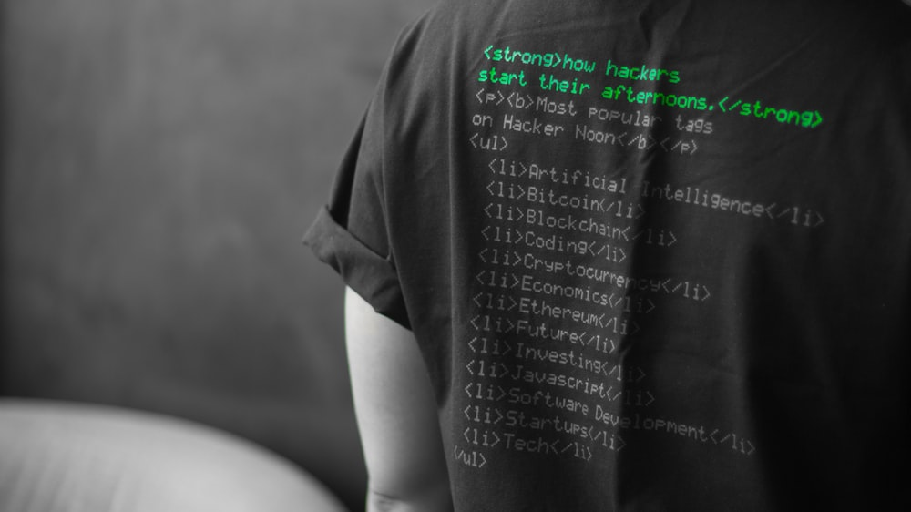

Capture The Flag
Capture the flag is a mind sport which held online or on a local network. This sport basically based on Netwoking and Security faults. Like Competitive Programming , Capture the Flag or CTF is online sport where players take part and compete among themselves. Again, This is not a challenge, it a Sport and Again you need prepapration. In this blog, I will give some basic idea and some very useful tips for CTF.
What is CTF?
As I explained above, CTF is a online sport. The CTF basically divided into two types -
- Jeopardy style : In this type of CTF, your are given different type of
questions related to different techniques and you need to find flag which hidden in these
files or codes and summit it. Jeopardy style contains mainly 6 types of questions -
- Cryptography - (regarding encrpytion/decrpytion)
- Web Exploitation - (regarding website attacks)
- Reverse Engineering - (regarding Reengineering)
- Forencis - (regarding investigation of file)
- Binary Exploitation - (regarding binary level manipulation)
- Misc - (everything which left like OSINT, pwn, etc..)
- Wargames : Wargames are totally different then jeopardy style. In wargame, there are two teams, i.e., Red team and Blue team, and both have a common task. The task is to take control over opponent's server and securing own server simontanously. In Wargames, you actually saw real heat of the competition.
Now, the question arise that what to do or where to start.
Where to start?
Firstly, I recommend to not even think about Wargames, start with jeopardy style because here you can explore yourself to which field you like most. And on the behalf of refernces -
- picoCTF : This site provide you basic level of CTF questions and afterwards take you towards advance questions.
- Try to learn any programming language, my recommendation is python, to handle with code formatting and script writing. Why choose python? I will expalin you later.
- Try to be user friendly with linux because most of the tools are in form of script and linux is best to run them on terminal view. Again, my recommendation is Kali Linux or Parrot OS.
- Take any youtube free course on Networking. It will help you to understanding data transmission over a network or internet.
References
The above provided post is sufficient for the beginners to start their CTF jouney. This block of post provide references, tips and tricks for CTF.
NOTE: Try to take a look at once a day because I will try to update this block regularly for tips and tricks.
Tips:
- Try your hands first with web exploitation or OSINT type of question because they are easy then other types.
- Start reading other's Writeups to understand their approch.
- Use Kali linux or Parrot OS, it provide you 100 of tools pre-installed in your linux OS.
- For Web Exploitation, if a website included a database, then most likely, these website exploitable to SQLinjection. Wait...what? SQLinjection? I will explain it later in other post. By now, you can google it.
- Basics of general skills by picoCTF
- Basics of cryptography by picoCTF
- Basics of web exploitation by picoCTF
Final Words
I know this blog have nothing right now but I promise to update this blog with more topics. Try to take look regularly for updates.